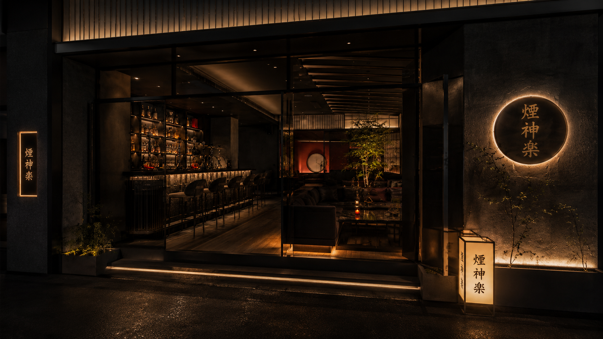

SHISHA
香りを仕立てる
その日の気分やお好みに耳を傾け、夜の過ごし方に寄り添う一台をご提案します。

01 · CONCEPT
煙神楽が届けたいのは、ただシーシャを吸うだけではない、夜そのものを味わう時間です。
序 OUR PHILOSOPHY
ゆっくりと形を変える煙、グラスに落ちる光、心地よい距離の接客。シーシャと酒、空間のすべてが重なり、日常から少し離れた静かな高揚をつくります。
誰かと語らう夜も、ひとりで余韻に浸る夜も。歌舞伎町の奥で、それぞれの過ごし方を受け止める大人の居場所を目指します。
壱 EXPERIENCE
ひとつだけを際立たせるのではなく、香り、酒、接客の間に生まれる調和を大切にしています。
SHISHA
その日の気分やお好みに耳を傾け、夜の過ごし方に寄り添う一台をご提案します。
SAKE
煙と会話の時間に寄り添う一杯が、歌舞伎町の夜をゆっくりとほどきます。
HOSPITALITY
近すぎず遠すぎない距離感で、一人ひとりが思い思いに過ごせる時間を整えます。
弐 WORLD
直接的な装飾に頼らず、余白、暗さ、円、光と影の重なりによって、煙神楽らしい和の気配を表現します。